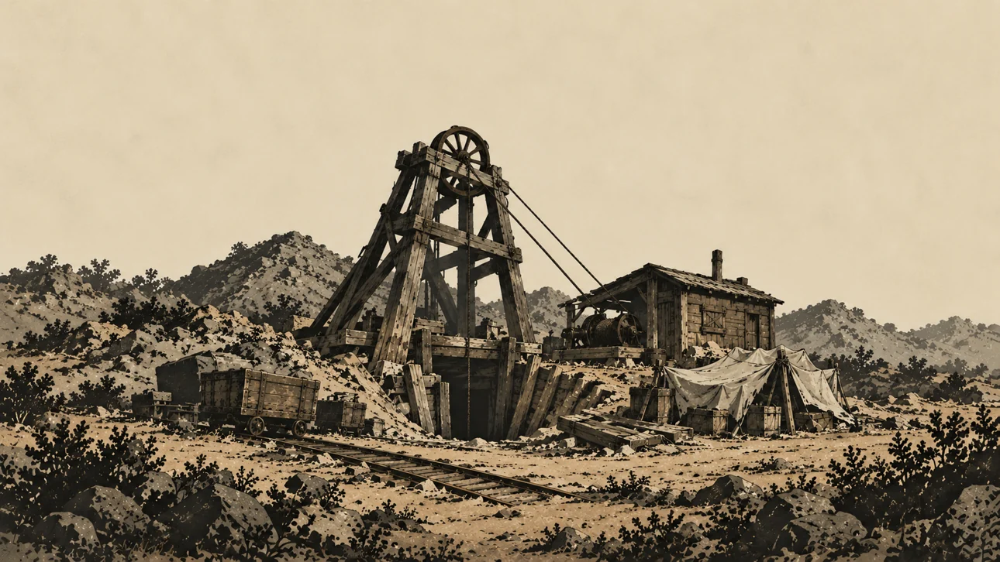
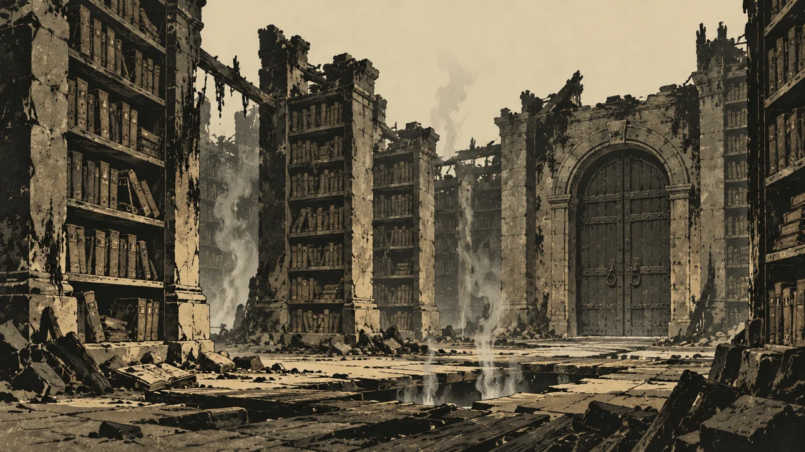
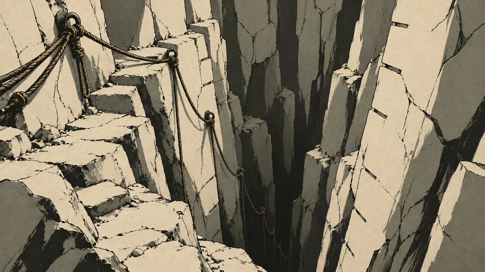
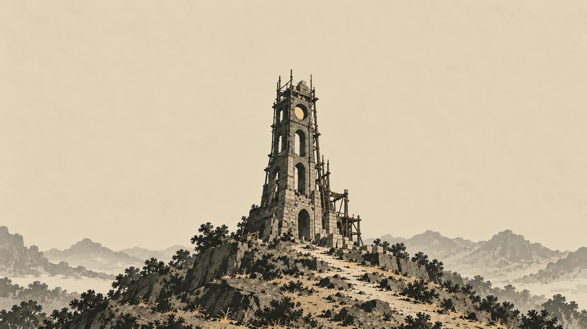

1290 × 726 WebP, quality 86. These previews use the delivered files and a centered cover crop, at up to 430 CSS pixels wide.



Keep this illustration out of store listings and sector list thumbnails. Its in-app access review reveals the image only once the sector is unlocked.
